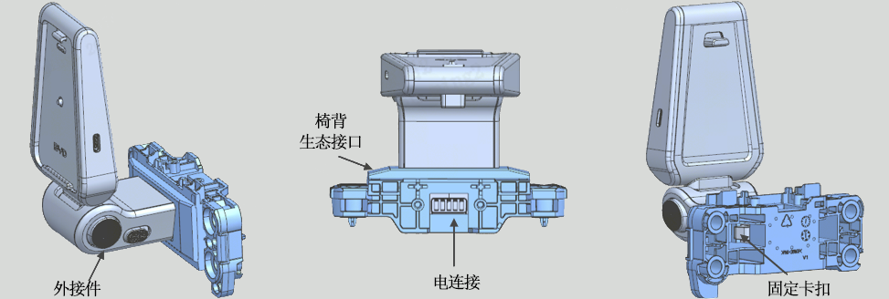
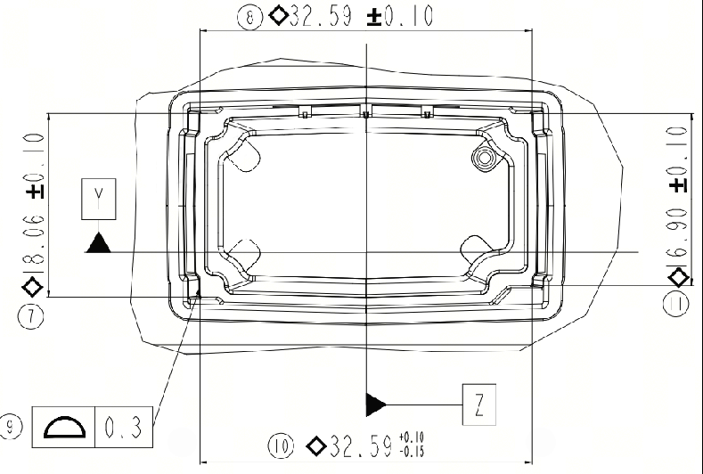
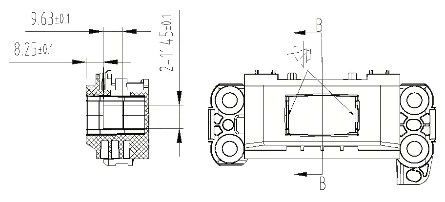
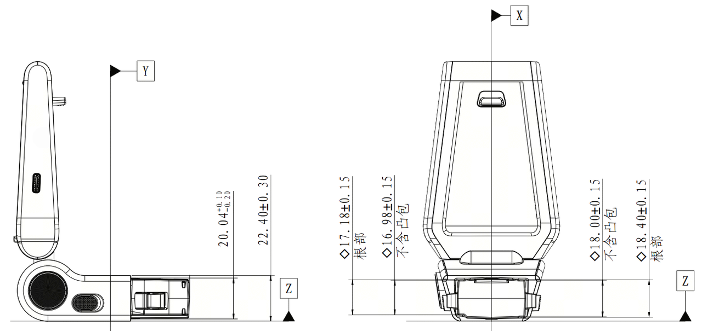
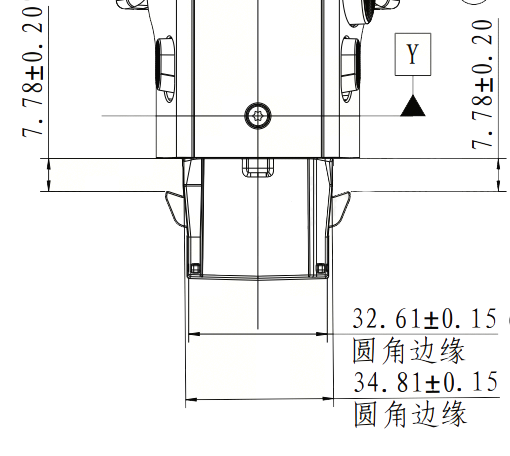
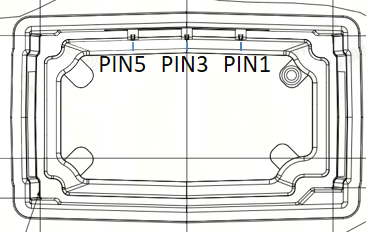

椅背生态接口
椅背生态接口是面向汽车后排乘客的标准化外接扩展接口，主要功能是为消费者提供快速安装固定平板电脑屏幕、衣架、小桌板等外接件，并可扩展支持儿童用品、办公用品、休闲娱乐、健康护理、车载功能扩展等场景，同时满足快速拆装、可靠连接、多场景兼容、承载以及车规级环境耐受的要求。
1. 结构安装
外接件插头根据提供的相关底座数模设计，需要满足装配常规尺寸，即外接件插头可插入椅背生态接口，并且满足卡扣卡接配合，以及电气连接等常规要求，其主要安装接口见下图。

图 1-1 外接件插头
1.1 车端接口
- 椅背生态接口布置于座椅背面，接口位置向后，打开椅背生态接口滑动门后可见，后排乘客可使用此接口快速进行外接件的连接固定；
- 椅背生态接口采用塑胶材质双射注塑工艺，可以承重负载≤1kg；
- 椅背生态接口开口为多边形，从外向内有1°倒角，并且底部两端有不同尺寸凸台，作为外接件装配时的防错特征，尺寸如图所示；

图 1-2 椅背生态接口开孔尺寸示意图
- 椅背生态接口固定卡扣特征，尺寸参考下图（左右两侧各一个）；

图 1-3 椅背生态接口固定卡扣
- 椅背生态接口集成3pin电气接口，具备插入检测功能；弹片工作行程为0.65±0.2mm，压缩弹力2±0.2N，弹片接触点镀金（镀层厚≥0.3μm）。
1.2 外接件
- 外接件插入椅背生态接口部分的外形、 安装尺寸应严格按照椅背生态接口提供的图纸及局部3维数模规定设计；

图 1-4 外接件插入端尺寸示意图
- 外接件应具有固定卡扣特征，将插头卡接在椅背生态接口中，防止产品滑出（左右两侧各一个）；

图 1-5 固定卡扣特征尺寸示意图
- 外接件若有电气功能，此位置需要保证特征尺寸，和椅背生态接口的弹片连接器相匹配；
- 外接件与椅背生态接口之间的装配力应满足10N≤F(装配)≤50N，拆卸力应满足10N≤F(拆卸)≤35N的要求；
- 外接件的重量应满足≤1kg的要求。
2. 供电能力
椅背生态接口提供1个3PIN母端插槽，外接件未经书面同意不得擅自超出接口供电阈值；接口兼容性方面，外接件接入后应能与车机在电气特性、通讯协议、负载能力、保护特性等方面全兼容。
- 额定电压：12V （输出电压范围9V~16V）；
- 额定电流：3A；
- 过流保护：5A；
- 过压保护：18V；
- 输出控制：跟随整车上下电。
3. 通讯方式
椅背生态接口具备1路遗留检测的硬线通讯能力。
外接件也可以采用蓝牙、Wi-Fi与车机通讯，其中蓝牙协议参考《比亚迪智能设备开放接入协议》，如有Wi-Fi通讯需求请提交工单与我方建联。
4. 电气接口

图 4-1 椅背生态接口PIN脚
| PIN序 | 管脚名称 | 符号 | 额定电流 | 说明 |
|---|---|---|---|---|
| 1 | 电源正极 | VCC | ≤3A | 接ON档电 |
| 3 | 遗留检测 | DET | ≤200mA | 左/跨域控制器检测 |
| 5 | 电源负极 | GND | ≤3A | 接ON档电 |
表 4-1 椅背生态接口PIN脚定义
5. 注意事项
椅背生态接口开发者在开发产品前，请先阅读并遵守以下注意事项，以确保开发的生态设备能够满足椅背生态接口的要求，充分发挥椅背生态接口的性能，并能在比亚迪椅背生态接口上正确和安全使用：
- 椅背生态接口不具备防水功能，外接件应满足干燥的要求，避免进水短路损坏椅背生态接口；
- 椅背生态接口具备遗留检测功能，外接件遗留检测引脚DET下拉电阻应满足400±40Ω的要求；
- 椅背生态接口具备带电插拔功能，外接件应满足带电插拔的要求；
- 椅背生态接口承重≤1kg；
- 外接件外形尺寸须结合座椅小桌板展开、折叠与调节过程中的运动包络进行综合校核，确保各运动工况下不发生结构干涉；
- 外接件外凸结构应紧贴座椅本体布置，外凸尺寸≤40mm，与后排乘员应保持安全距离；
- 外接件所有外露棱边、棱角须倒圆（满足GB 11552-2009乘用车内部凸出物标准）或采用软质材料包覆，杜绝乘员磕碰、划伤等安全风险。